附加品
共 981 个附加品 · 第 2/7 页
| 名称 | 稀有度 | 效果 | 所属 |
|---|---|---|---|
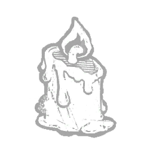 燃烧的蜡烛 Burning Candle |
稀有 | 弗兰克·科顿在一次致命的召唤仪式中点燃的蜡烛。使开始连锁狩猎的计时缩短 -3 秒。 | 地牢修女 |
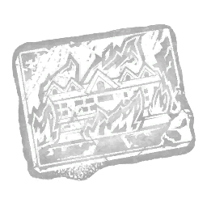 燃烧人画像 Burning Man Painting |
精贵 | 一张湖景酒店的地图。这座罪恶之地被红色火焰覆盖。未命中“厄咒：天罚打击”攻击后触发以下效果：你当前位置周围3米范围的逃生者气场对你显示6秒。 | 刽子手 |
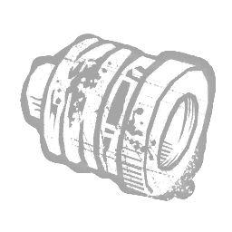 烧毁的保险丝 Burnt Fuse |
传说 | 电流的冲击势不可挡。它使那个人的皮肉烧焦，散发着熟肉的气味。当逃生者被钩状尖刺刺中时，出口大门对他们以及13米范围内的任何逃生者被封锁。在逃生者不再被刺中后，此效果持续5秒。 | 杀戮者 |
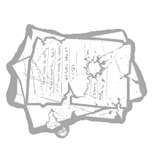 烧焦的信件 Burnt Letters |
罕见 | 一些追随者试图写信回家。斯坦珀确保没有人能与外界接触。因伤害逃生者而加入入夜计量条的进度增加+25%。 | 深潜者 |
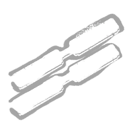 蝴蝶胶带 Butterfly Tape |
稀有 | 用于闭合小伤口的医用级胶带。治疗速度提高 +5%。 | |
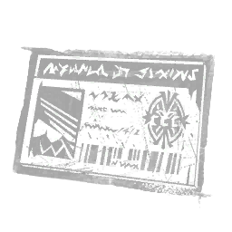 CCG门禁卡 CCG ID Card |
传说 | 每位喰种调查员随身携带的卡片。进行赫子跃击翻越动作时触发以下效果：你周围24米范围内的赫子标记气场将显示给你，持续3秒。 | 食尸鬼 |
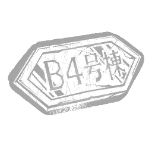 木屋招牌 Cabin Sign |
稀有 | 智子与礼子观看录像时待过的小屋。它承载着最初那些诅咒的记忆。电视机投影所需时间-4.5秒。 | 般若 |
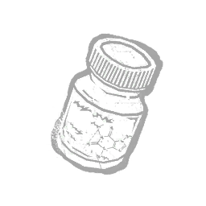 咖啡因片 Caffeine Tablets |
稀有 | 斯坦珀的追随者们被告知不得入睡，否则会招致德鲁安妮的怒火。临近末日时，他从大陆运来了毒品。充能幽冥或传送时，柜子的气场呈黄色显示。 | 深潜者 |
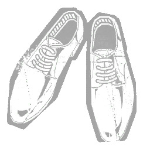 囚心之鞋 Caged Heart Shoes |
罕见 | 智勋在音乐录像《One Caged Heart》中所穿的鞋子。可让「点舞」动作更加流畅优雅。当你用基础破拆摧毁木板与可破坏墙壁，或对发电机造成破坏后，下一次进入投掷状态时，投掷状态期间的移动速度提升5%，持续10秒。 | 小丑女 |
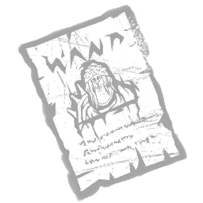 战斗号召 Call to Arms |
罕见 | “告示张贴在许多城镇，领主们急于保护自己的财富，招募身体强壮的雇佣兵。无人幸存。”修改巡逻路径，获得以下效果：最大长度增加 +4 米。绘制速度增加 +7%。 | 骑士 |
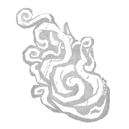 坎贝尔的最后一口气 Campbell's Last Breath |
传说 | 从疗养院牧师坎贝尔神父身上夺走的强力最后一口气。在护士手中会猛烈噼啪作响。从完全充能的闪烁中现身后，你会自动朝面对的方向以满充能进行闪烁。这要求你在初次闪烁后至少剩余1次充能。 | 女护士 |
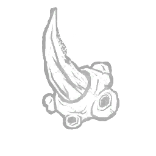 溃疡荆棘 Canker Thorn |
罕见 | 从 visceral 肿囊中剪下的一根相当粗壮的棘刺。它会分泌一种温和的毒素。疲惫持续时间 -0.5 秒。 | 枯萎者 |
| 被黑暗捕获 Captured by the Dark | 活动 | “这部纪录片声称，那些失踪事件与小镇上的电影院有关。观众走出影院时都感到不安。” 修改 UVX，产生以下效果：所有幸存者以虚弱状态开始trial。同时存在的幻觉数量减少1个。 | 未知者 |
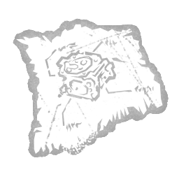 化油器调校指南 Carburettor Tuning Guide |
活动 | 一份绘制粗略的电锯化油器调校指南。启动电锯冲刺会消耗所有可用力量印记，并合并它们的持续时间：每个印记可令电锯冲刺持续时间增加 +0.5 秒。电锯冲刺期间的移动速度降低 -2%。 | 食人魔王 |
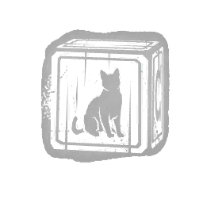 猫积木 Cat Block |
罕见 | 一块白紫相间的木块，上面绘有一只熟睡的猫和字母“C”。使“梦境投射”能力的冷却时间减少 -10%。 | 梦魇 |
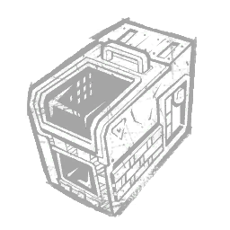 猫笼包 Cat Carrier |
传说 | 拯救猫咪是个崇高的目标，但这也很分散注意力。每当遥控火焰炮塔处于爬行模式时，你获得以下效果：获得不可侦测状态效果，持续30秒。 | 异形 |
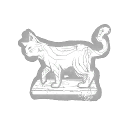 猫雕像 Cat Figurine |
稀有 | 一个吸引了小维克多目光的木偶。他尖叫不止，直到母亲从市场上偷来给他，差点暴露了他们的藏身之处。解锁看到猛扑目标位置的能力。 | 双胞胎 |
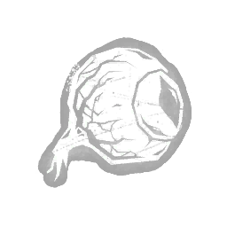 猫眼 Cat's Eye |
罕见 | 一只眼睛，属于被饥饿的德沙耶一家吃掉的一只猫。维克托瞒着母亲把它藏起来，当作玩具。在蓄力猛扑时，压制维克托发出的所有噪音。 | 双胞胎 |
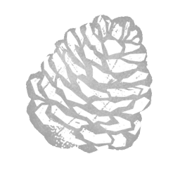 僵呆男孩的宝藏 Catatonic Boy's Treasure |
罕见 | 一颗意外缓解了病人重复动作的松果。取自“紧张症男孩”的尸体。使连环闪烁造成的额外疲惫减少-65%。 | 女护士 |
| 庆祝海报 Celebrate! Poster | 传说 | 「庆祝会持续整晚，或者直到没人为止。」将消防斧嵌入逃生者体内后，所有玩家在该逃生者 32 米范围内获得以下效果：获得 +12% 急速状态效果。翻越速度提升 +20%。两种效果持续至消防斧被移除。 | 机械人偶 |
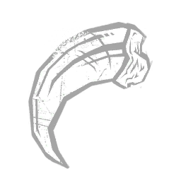 刻耳柏洛斯之爪 Cerberus Talon |
稀有 | 来自德古拉最可怕守卫之一的尖锐纪念品。修改气味球，效果如下：增加其气场揭示距离 +100%。 | 黑暗领主 |
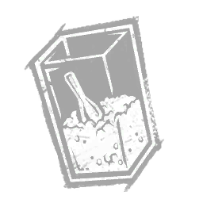 谷物口粮 Cereal Rations |
稀有 | 含有每日推荐摄入量100%的维生素A，味道糟透了。在隧道内时，你获得以下效果：显示遥控火焰炮塔的气场。该效果会持续3秒。 | 异形 |
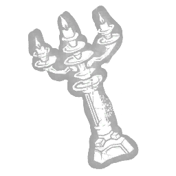 仪式烛台 Ceremonial Candelabrum |
罕见 | 维克多打翻的烛台，导致囚禁他的人被烧伤。这是他坚韧的象征。操控夏洛特时，维克多的碾压时间增加+0.2秒。 | 双胞胎 |
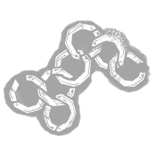 锁子甲碎片 Chain Mail Fragment |
精贵 | 图标 描述 价格 此附加品已退役（此可解锁物品过去已退役，在当前游戏中已不存在。）休息时间被用来修理他们的盔甲，以避免被… | 骑士 |
| 异教徒之链 Chains of the Heretic | 传说 | “最响亮的背教者将被立为儆戒。他们将被铁链拖过街巷。”——（《见证柯恩拉德》，第41章）处于「狂热」状态时：施放的「神圣之光」将始终朝向你。施放的「神圣之光」造成伤害并施加「异端」前的最短延迟设为0.35秒。受控「神圣之光」的最大速度提升+100%。施放的「神圣之光」的最大速度提升+50%。 | 审判 |
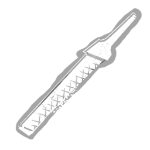 链锯锉刀 Chainsaw File |
稀有 | 一把用来打磨电锯链条的锉刀。将暴走状态的持续时间减少 -0.25 秒。 | 食人魔王 |
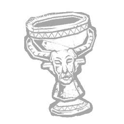 金圣杯 Chalice (Gold) |
罕见 | 一个用于庆祝夏至的纯金圣杯。与逃生者碰撞后，束缚的剩余持续时间延长+50%。 | 幕后黑手 |
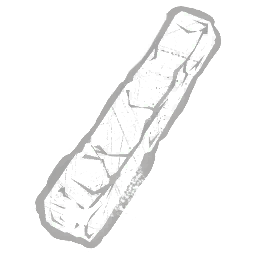 木炭条 Charcoal Stick |
精贵 | 一根能遮盖任何被其涂抹之物的炭条。飞行中的厄鸦气场不再对逃生者可见。召唤厄鸦后的0.5秒内，厄鸦的气场对逃生者可见。 | 艺术家 |
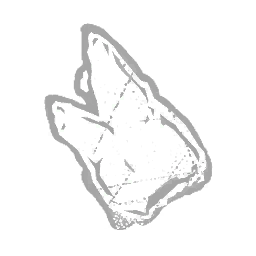 敲牙者之牙 Chatterer's Tooth |
传说 | 出自一名嘴中喋喋不休的修道士的碎片。这颗牙齿从他的颌骨断裂而出,终于归于沉寂。获得看见气场的能力。拾取悲叹构装会中止当前进行中的连锁狩猎，并赋予 25 秒的隐匿状态效果。 | 地牢修女 |
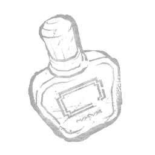 廉价古龙水 Cheap Cologne |
稀有 | 带有刺鼻外用酒精气味的廉价古龙水。鬼面佩戴它来宣示自己的存在。专为即兴拜访而备。使标记的持续时间增加10秒。 | 鬼脸 |
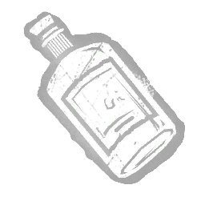 廉价杜松子酒瓶 Cheap Gin Bottle |
传说 | “当夜晚难捱、白天更难捱时，一点解药会让你振作起来。” 修改解药，获得以下效果：急速状态效果的强度 | 小丑 |
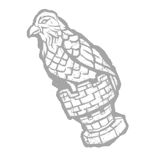 棋子 Chess Piece |
活动 | 在设施中为数不多的娱乐方式之一，它帮助学生们学习逻辑与战术。强化藤蔓攻击，产生以下效果：获得2层充能，攻击半径减少40%。 | 先驱者 |
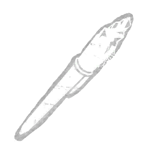 咬过的钢笔 Chewed Pen |
精贵 | 一支笔帽被啃咬过的蓝色钢笔，残留着丹尼的DNA。从未被发现的定罪证据。使濒死状态逃生者的显现时间增加3秒。 | 鬼脸 |
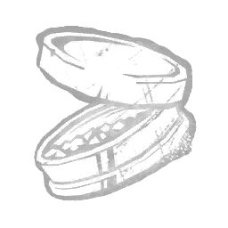 嚼烟草 Chewing Tobacco |
罕见 | 一罐从格伦威尔一具被开膛的尸体上取来的切丝加糖烟叶。刺激神经系统。逃生者挣脱救赎者时，眩晕持续时间减少0.25秒。 | 死神之枪 |
| 奇卡的围兜 Chica's Bib | 精贵 | 「让「杯子先生」不再把场面搞得一团糟的好办法。」处于消防斧的作用范围内时，逃生者受到以下效果影响：施加疲惫状态效果。离开作用范围后，该效果仍会持续 5 秒。 | 机械人偶 |
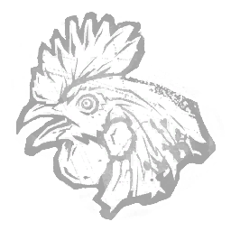 鸡头 Chicken Head |
活动 | “有人认为它具有神秘属性，这个特殊样本在一次进食后卡在了克拉苏的喉咙里。”修改无形之肉，附带以下效果：所有逃生者都会在试验开始时受到寄生 I 状态影响。发光真菌的初始数量增加 +2。 | 浮屠鬼 |
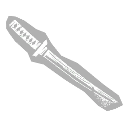 儿童木刀 Child's Wooden Sword |
罕见 | 秋人的练习剑。这孩子在受伤之后便很少用到它了。环境中血球的气场解读范围增加3米。 | 鬼武者 |
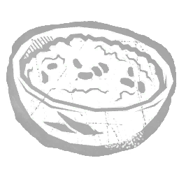 辣椒 Chilli |
罕见 | 一大碗热气腾腾的辣椒，让你保持精神饱满、身体强壮。每消耗一个印记，电锯冲刺的持续时间增加 +0.15 秒。电锯冲刺窗口的持续时间增加 +0.15 秒。“我这儿可有好烤肉！”——德雷顿·索耶 | 食人魔王 |
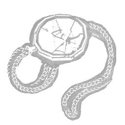 破损单片眼镜 Chipped Monocle |
稀有 | 塔尔博特很少使用的单片眼镜，尽管晚年视力下降。解锁看到猛击目标位置的能力。 | 枯萎者 |
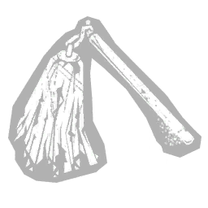 破损的采配 Chipped Saihai |
罕见 | 属于莲次郎的一根短棍。卡赞离开时将其偷走。血怒的持续时间延长6秒。 | 鬼武者 |
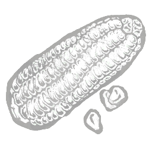 紫玉米 Choclo Corn |
稀有 | 一种常见于南美洲的玉米。几粒玉米粒就足以让乌鸦停下脚步享用点心。闲置厄鸦消散前的计时器增加+2秒。 | 艺术家 |
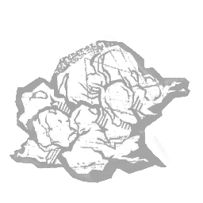 玛来糕块 Chunk of Malai |
罕见 | “多样化的蛋白质来源有助于良好的肠道健康。”修改发光真菌：每个被寄生的逃生者都会使其寄生计的消耗速率受到可叠加的 -8% 效率惩罚，最高可达 -32%。 | 浮屠鬼 |
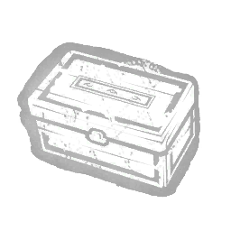 雪茄盒 Cigar Box |
传说 | “一组阴森而残缺的手指。令小丑满心渴望，并使他的化学制剂调制能力更为专精。”改装解毒剂，产生以下效果：使6米范围内的光环对强化玩家显示6秒。 | 小丑 |
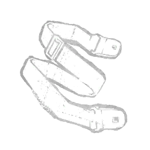 束紧带 Cinch Straps |
罕见 | 潜行时让一切保持到位的黑色束带。使未命中的普通攻击不会解除夜幕笼罩。 | 鬼脸 |
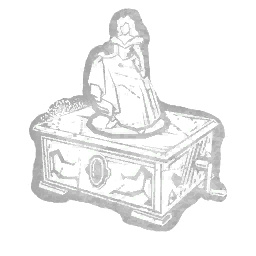 灰姑娘音乐盒 Cinderella Music Box |
罕见 | 一个装有灰姑娘童话人偶的音乐盒，发现于一个贴满各地贴纸的手提箱内。修改“厄咒：天罚打击”：将其冷却时间缩减-10%。 | 刽子手 |
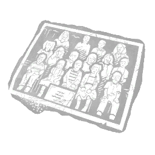 班级合照 Class Photo |
传说 | 一张在巴德姆幼儿园拍摄的大幅照片，展示了 94-95 学年欢乐的班级。使“梦境投射”能力能够以逃生大门开关为目标。使打开逃生大门的逃生者触发“杀手直觉”。 | 梦魇 |
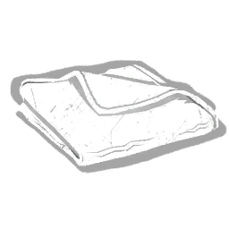 干净抹布 Clean Rag |
稀有 | 一块平凡的抹布。干净得可疑。工具箱修理动作速度提升20%。 | |
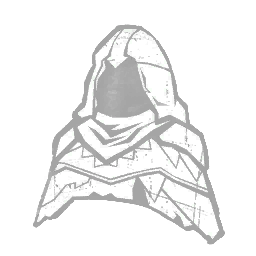 精灵斗篷 Cloak of Elvenkind |
精贵 | 它的色彩不断变幻，让你在远处更难被发现。施放飞行术时，获得以下效果：恐惧范围减少22米。此效果在飞行术结束后仍持续6秒。 | 巫妖 |
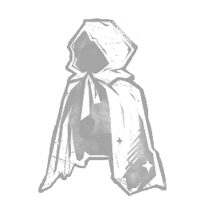 隐形斗篷 Cloak of Invisibility |
传说 | 一件强大的魔法物品，盗贼与厌恶冲突之人皆对其垂涎不已。每当四枚咒术同时处于冷却中时，你获得以下效果：获得不可侦测状态效果，持续20秒。 | 巫妖 |
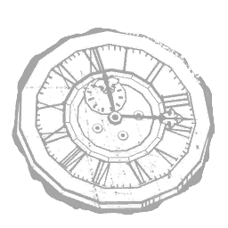 钟表指针 Clock Hands |
罕见 | 克里尔家族落地大摆钟的指针，被亨利的黑暗力量腐化。强化落地大摆钟，产生以下效果：逃生者在与落地大摆钟互动时获得茫然无视状态效果，并在互动结束后持续12秒。 | 先驱者 |
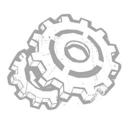 钟楼齿轮 Clock Tower Gear |
稀有 | 大钟楼的一块碎片，提醒着时间本身不可避免。修改变形能力，效果如下：减少其冷却时间 -5%。 | 黑暗领主 |
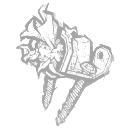 堵塞的进气口 Clogged Intake |
罕见 | 修改气流是调整电锯威力的关键。将超载的持续时间延长 +15%。 | 电锯莽夫 |
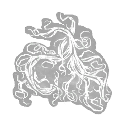 一绺头发 Clump of Hair |
罕见 | 曾经美丽的长发如今隐藏在蓬乱纠结的发丝之后。退现形状态下完全隐身的距离阈值-6米。 | 般若 |
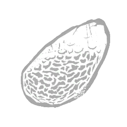 粗石 Coarse Stone |
稀有 | 这块石头过于粗糙，毫无用处。被它损坏的斧刃会造成可怕的开放性伤口。斧刃击中受伤逃生者时，其痛苦呻吟的音量增加50%。 | 女猎手 |
| 咖啡渣 Coffee Grounds | 罕见 | 一个生锈的旧罐子，里面装着潮湿的咖啡渣。设下捕兽夹后，可使急速状态效果强度提升+5% | 设陷者 |
| 冷土 Cold Dirt | 传说 | 一把取自清洁工安息之处的泥土。异常冰冷。显著缩短“狂暴猛袭”的冷却时间（0.75 秒）。 | 军团 |
| 寒钢镣铐 Cold Steel Manacles | 罕见 | 亚历杭德罗·圣地亚哥曾为甲胄师学徒，毫无悔意。召唤狱卒后的冷却时间减少20%。 | 骑士 |
| 战斗束带 Combat Straps | 稀有 | 用于固定布料以提升 | 猪女 |
| 七号化合物 Compound Seven | 稀有 | 这个早期样本未能达到预期效果，但无论如何都显示出惊人的效果。猛击后，使你自动面向你所在位置16米范围内最近的逃生者。 | 枯萎者 |
| 三十三号化合物 Compound Thirty-Three | 活动 | 塔尔博特倒数第二次尝试制作血清。虽然它没有帮助他逃脱，但确实产生了强大的副作用。枯萎腐化上限为5层。冲刺期间转身速度提高 +11%。冲刺持续时间增加 +11%。“时间稀缺。就让这一次成为……”—— 塔尔博特·格莱姆斯 | 枯萎者 |
| 二十一号化合物 Compound Twenty-One | 精贵 | 一种对人类致命的血清。它能激发那些……更胜于人的存在体内的有益特性。猛击位置8米范围内的气场向你显示3.5秒。 | 枯萎者 |
| 忏悔者战号 Confessor's War Horn | 罕见 | “号角之声将震撼不信者的心灵，并凝聚信徒的意志。”——《科恩拉德见证录》第三十三章：获得异端的逃生者受到疲惫状态效果影响，持续 10 秒。 | 审判 |
| 铜戒 Copper Ring | 稀有 | 发现于布鲁克海文医院地下室。上面刻着一只蜘蛛的图案。修改“审判之仪”：将其最大持续时间增加+5秒。“我被锁在地下室的地下室里。那里又小又黑，我非常害怕。我弄丢了我珍贵的戒指。但我永远也不会再回到那里了。” | 刽子手 |
| 验尸官咖啡 Coroner's Coffee | 罕见 | 一杯没喝完的咖啡。投掷尖刺的推动效果持续时间增加 +25%。用投掷尖刺击中逃生者后，若他们在被推动期间未与地形发生碰撞，则获得 +13% 急速状态效果，持续 3 秒。 | 杀戮者 |
| 配重 Counterweight | 稀有 | 增加底部重量以提升稳定性。将电锯冲刺期间电锯的初始转向速度降低 -70%。 | 电锯莽夫 |
| 鸡冠铃 Coxcombed Clapper | 活动 | 一条简单的鸡冠结绳缠绕在铃锤上，以消音并散发出一股恶意灵气。使丧钟静音。 | 幽灵 |
| 开裂的起动灯泡 Cracked Primer Bulb | 稀有 | 一个清除燃油管线中空气的按钮。这台机器需要喂食。超速计量表的充能速率提高+15%。被电锯击中的逃生者只会损失一个健康状态。 | 电锯莽夫 |
| 开裂的杯 Cracked Sakazuki | 稀有 | 来自一SAN婚礼的杯子。它没能撑过那一夜便已破损。减少进入血之狂怒的过渡时间 -0.5 秒。减少退出血之狂怒的过渡时间 -0.5 秒。 | 鬼武者 |
| 破裂的龟蛋 Cracked Turtle Egg | 精贵 | 一枚淡橙色的龟卵，蛋壳已裂，内容物被取空。使幻影陷阱的触发僵直时间增加 +30%。 | 女巫 |
| 一箱齿轮 Crate of Gears | 传说 | “这套机械零件可用于打造难度更高、且更易安装的锯箱与倒置熊夹。”安装倒置熊夹时，齿轮箱提供其主要效果：使你的行动速度提高 +50%。逃生者搜索锯箱时，齿轮箱提供其次要效果：使其行动速度降低 -25%。 | 猪女 |
| 海兽骨 Creature's Bone | 稀有 | 那是她从未见过的东西，而它骨中的骨髓美味极了。猎犬的眩晕时间缩短 -50%。 | 猎犬主人 |
| 火化残骸 Cremated Remains | 罕见 | 提取其他殖民者的 DNA 后，他焚烧了他们的遗骸。被时间滑流影响的逃生者会受到致盲状态效果影响。 | 奇点 |
| 船员耳机 Crew Headset | 罕见 | 虽然它们促进了团队沟通，但持续的嘈杂声也让船员更容易被追踪。在隧道内时，逃生者脚步声的侦测范围增加+6米。 | 异形 |
| 船员名单 Crew Manifest | 传说 | 一份发送至德瓦卡的飞船上全体船员的完整生物数据列表。当被时间滑流影响的逃生者将时间滑流传给另一名逃生者时，该逃生者的气场会向你显示 8 秒。使时间滑流在逃生者之间的传播距离增加 +2 米。 | 奇点 |
| 绯红仪式书 Crimson Ceremony Book | 传说 | 一本关于远古神祇的书。作者不详。成功的“厄咒：天罚打击”攻击触发以下效果：使被击中的逃生者受到出血与重伤状态效果影响，持续80秒。“说吧！我是猩红之主！谎言与迷雾并非它们，而是我！” | 刽子手 |
| 绯红印章 Crimson Stamp | 活动 | 只有绝对自信之人才敢在地图上盖上自己的印记。修改地图，获得以下效果：揭示 8 米内光之束的气场。光之束的持续时间缩短 -10 秒。其充能次数减少 -2。 | |
| 毁灭者之冠 Crown of the Destroyer | 传说 | “造物主见此，赐予它一顶王冠，并说：用此将光明带入黑暗。”——《蛮族卷之一》第 6 章 当一名逃生者从放逐中被救下时，持续 20 秒：你的恐惧范围 -70 %。你的恐惧范围被复制到所有审判神龛。获得无法侦测状态效果。 | 审判 |
| 揉皱的乐谱 Crumpled Sheet Music | 罕见 | “在绝望之前，她曾希望持续练习便足以成功。”用寄生腺成功命中一名逃生者会触发以下效果：使猛冲立即获得 +12 充能。 | 浮屠鬼 |
| 冷冻凝胶 Cryo Gel | 罕见 | 一种在进入深度低温睡眠前涂抹在船员身上的无摩擦凝胶。使被时间滑流影响的逃生者在受到普通攻击命中后，遭受出血状态效果影响，持续 60 秒。 | 奇点 |
| 水晶球 Crystal Ball | 稀有 | 数世纪以来，施法者皆以此物窥视友敌。每当驱散法球咒术侦测到一名逃生者时，你获得以下效果：杀手直觉的持续时间增加+1秒。 | 巫妖 |
| 佐伊方块 Cube of Zoe | 传说 | 一个奇怪的盒子，其存在能无中生有。每当佐伊的发电机方块触发其效果并持续10秒时：使黑暗领主周围的区域不断生成火焰之柱。 | 黑暗领主 |
| 直切单曲 Cut Thru U Single | 传说 | 智勋加入 NO SPIN 后发行的第一支单曲。在韩国榜单上取得了全榜通杀。达到A级时，32米内的所有逃生者将被杀手直觉显形4.4秒。 | 小丑女 |
| 切割钢丝 Cutting Wire | 罕见 | 一种由锯齿状金属丝和两个木柄制成的简易切割工具。工具箱破坏动作速度提升20%。 | |
| 柏木颈饰 Cypress Necklet | 罕见 | 一件僵硬的饰品，佩戴于颈部，由枯死的植物制成，上面粗糙地绑着柏树皮和沼泽苔藓。使幻影陷阱的设置速度提升 +15%。 | 女巫 |
| 父亲的靴子 Dad's Boots | 精贵 | 一双从老马克斯·汤普森尸体上扒下的可靠靴子。电锯冲刺期间的转身速度提高+20%。 | 电锯莽夫 |
| 损坏的注射器 Damaged Syringe | 稀有 | 在淹没瑞秋城的混乱中狼狈不堪的医疗设备。增加疫苗的注射时间 +5 秒。 | 复仇女神 |
| 黑暗腰带 Dark Cincture | 罕见 | 一条在哀悼时期用作腰带的黑绳。取自坎贝尔神父的尸体。在连锁闪现窗口期间，你的移动速度提高+30%。 | 女护士 |
| 墨镜 Dark Sunglasses | 传说 | 一副经增强现实技术强化的眼镜，为佩戴者带来战场上无可估量的优势。每当一名逃生者达到重度感染时，获得无法侦测状态效果20秒。 | 幕后黑手 |
| 最浓墨汁 Darkest Ink | 精贵 | 一种非自然的墨水，污秽而黑暗，仿佛能吸收周围的光线。被鸦群包围的逃生者受到致盲状态效果影响。驱散鸦群后，该效果持续15秒。 | 艺术家 |
| 死蝴蝶 Dead Butterfly | 稀有 | 一只在伍德赛德公寓床上发现的蝴蝶。它很脆弱，一碰就几乎要散架。修改“审判之仪”：将其充能速度提高+10%。 | 刽子手 |
| 死蝇泥 Dead Fly Mud | 稀有 | 一小团泥土，因苍蝇的残骸而发黑。吞食后可提升耐力。使对已触发僵直的幻影陷阱的传送距离增加 +10%。 | 女巫 |
| 死兔 Dead Rabbit | 罕见 | "一只从颈部到尾部被剖开的灰兔。" 调整恐惧半径：内心邪恶：追踪者模式：减少 -25%。邪恶附身：增加 +25%。 | 变形者 |
| 垂死挣扎合集 Death Throes Compilation | 活动 | 收录智勋受害者临终前最后的声音，并改编成一张黑胶唱片。令人不寒而栗，又情感原始。主事件结束后，恢复75%的刀刃最大容量。"求你了……不要……别让它那么痛……我……我……"——身份不明的声音 | 小丑女 |
| 鹿肺 Deer Lung | 精贵 | 一颗让魔王重新焕发活力的生鲜弹力肺。传送速度提高 +30%。可用传送门数量减少 -2。 | 俄摩拉虫 |
| 鹿皮手套 Deerskin Gloves | 精贵 | 一双硝制皮革手套，保护双手并带来稳固的握感。将储柜处斧刃的装填时间减少至默认值的80%。 | 女猎手 |
| 划花的笑脸别针 Defaced Smiley Pin | 罕见 | 一枚曾经看起来友善的亮黄色笑脸按钮，笑脸图案已被损毁。“军团”的标志性图案。逃生者在完成自救后，将受到“重伤”状态效果影响，持续 60 秒。 | 军团 |
| 失灵节拍器 Defective Metronome | 罕见 | “节拍器在疯狂运转时迸出火花。”修改发光真菌：使处于其效果影响下的逃生者受到疲惫状态效果影响。 | 浮屠鬼 |
| 驳回的申请单 Denied Requisition Form | 活动 | 尽管光速技术已经问世，官僚流程似乎依旧快不起来。使所有逃生者在开局时便感染时空滑流。使第一批电磁脉冲的打印时间上限延长 +30 秒。 | 奇点 |
| 耗尽的墨带 Depleted Ink Ribbon | 传说 | 现在还有谁能拯救他们？干涸的墨带似乎能激发僵尸的活力。使被消灭的僵尸的重生时间减少 -5 秒。使僵尸的移动速度提高 +0.5 米/秒。一旦出口大门开启，僵尸将在出口区域重生。“听好了，这他妈的绝对是最后一次。”——吉尔·瓦伦丁 | 复仇女神 |
| 深度规耙 Depth Gauge Rake | 传说 | 一种增大深度规角度、让电锯链条更能“啃木头”的工具。力量印记数量增加 +1。力量充能速度降低 -18%。电锯冲刺期间的移动速度降低 -2%。 | 食人魔王 |
| 警长徽章 Deputy's Badge | 传说 | 一位警官的徽章，他发现有些事情不值得调查。在“无所不在的邪恶”状态下，经过发电机2米范围内会使发电机爆炸，失去5%进度并开始倒退。如果逃生者正在修理发电机，所有修理该发电机的逃生者将改为获得一次特殊技能检验。如果技能检验失败，发电机在基础技能检验惩罚之外额外失去10%进度。 | 杀戮者 |
| 毁坏的枕头 Destroyed Pillow | 精贵 | 虽然被禁止睡觉，但奥斯曼人中的首领们把睡眠用品撕成碎片，防止那些胡思乱想的人偷偷溜去打盹。夜幕降临时，「黄昏」的冷却时间减少 -2.5 秒。 | 深潜者 |
| 来源不明的装置 Device of Undisclosed Origin | 罕见 | “那东西是在地球上造出来的？还是完全来自别处？” 当处于可看到该灵光（Aura）幻觉的范围内时，幸存者会产生以下效果：施加遗忘状态。 | 未知者 |
| 信徒护符 Devotee's Amulet | 传说 | 一枚血石护身符，其上 intricately 雕刻着巴比伦的灾乱与瘟疫之神的形象。令佩戴者充满无边虔诚。腐化驱散（Corrupt Purge）持续时间 +20 秒。 | 瘟疫 |
| 诊断工具（建筑） Diagnostic Tool (Construction) | 传说 | 一种能提供高度准确地形情报的装置。为 8 秒内的光环充能。 | 奇点 |
| 诊断工具（维修） Diagnostic Tool (Repair) | 稀有 | 一种能够找出建造物缺陷的装置。原本用于辅助维修。将瞄准范围提升+4米。 | 奇点 |
| 钻石袖扣 Diamond Cufflinks | 传说 | 袖扣——深深剜入一名跟踪智勋的私生饭眼中，任他活该。擦去血迹后，那闪光之中还有太多可看的东西。撕裂伤光环对你显形6秒。"嘘……你不用再看见自己的血了。"——白智勋 | 小丑女 |
| 脏钱 Dirty Money | 活动 | “再多的金钱也救不了你脱离他的魔掌。”发电机激活时获得2个印记。当你翻越窗户或木板或破坏墙壁时，获得1个印记；如果你还没有尖刺，则获得一个普通尖刺。 | 杀戮者 |
| 肮脏的室内鞋 Dirty Uwabaki | 精贵 | 图标 描述 花费 此附加品已退役（此可解锁物品在过去已退役，在当前游戏中已不存在。）一双方便的室内鞋。提升你的移动速度… | 怨灵 |
| 废弃空滤 Discarded Air Filter | 稀有 | 一个破裂且布满灰尘的滤清器。它的性能居然比原厂型号更好。超频表的衰减延迟增加20%。 | 电锯莽夫 |
| 丢弃的牛奶盒 Discarded Milk Carton | 传说 | “她决定绕远路回家，并向朋友们挥手道别，然后各奔东西。” 修改 UVX，产生以下效果：将 UVX 弹射物的弹跳强度翻倍，具体改动如下：弹性提升+8%，摩擦力降低-15%。 | 未知者 |
| 畸形的耳朵 Disfigured Ear | 传说 | 食人村聋童的耳朵。因头部多次受击而变形。其中困住的生命之力为女巫的能力解锁了巨大潜能：触发幻影陷阱会对逃生者造成以下效果：使其获得耳聋状态效果，持续 6 秒。 | 女巫 |
| 扭曲照片 Distorted Photo | 传说 | 看过录像的人会发现自己的所有照片都被扭曲，提醒着他们大难将至。方圆16米内目睹你显形的逃生者会惊叫，并在4秒内暴露自己的轮廓。"为什么偏偏只有你活了下来？"——山顶洋子 | 般若 |
| 洋娃娃眼睛 Doll Eyes | 稀有 | 拥有量产玩偶的好处之一，便是能轻松取得替换零件。当处于躲猫猫模式时，会侦测到20米范围内的窗户与木板的光环。 | 好人 |
| 蜻蜓翅 Dragonfly Wings | 罕见 | 一把发黄翅膀，干而干脆。吞食后可提升耐力。使对已触发僵直的幻影陷阱的传送距离增加 +12.5%。 | 女巫 |
| 龙牙匕首 Dragontooth Dagger | 传说 | 由真正的龙牙制成，刃口参差而残忍。使用普通攻击成功命中一名携带魔法物品的逃生者时，触发以下效果：造成出血与重伤状态效果，持续60秒。 | 巫妖 |
| 干樱花 Dried Cherry Blossom | 传说 | 一朵干枯凋零的樱花。曾是死亡的象征。在相位行走期间进入逃生者3米范围内会触发杀手直觉。划痕 相位行走。 | 怨灵 |
| 风干蝉 Dried Cicada | 精贵 | 一只覆盖着细密灰烬层的大型沼泽蝉；口感酥脆。吞噬以增强耐力。将传送至已触发幻影陷阱的距离增加 +15%。 | 女巫 |
| 马肉干 Dried Horsemeat | 罕见 | 漫长的征战往往需要补给，而倒下敌人的战马与任何农场新鲜口粮一样有用。狩猎持续时间延长4秒。 | 骑士 |
| 饮水的鸟 Drinking Bird | 稀有 | 散落在诺斯特罗莫号生活区的众多小饰品之一。在原本单调乏味的环境中增添了一丝奇趣。离开隧道后，杀手本能的持续时间增加+3秒。 | 异形 |
| 驾照 Driver's License | 传说 | 一张驾照，揭穿了奥尔森的真实身份：丹尼·约翰逊。在标记正在修理发电机的逃生者时，会扣除发电机最大可能修理进度的20%，并封锁该发电机15秒。若有多名正在修理的逃生者被标记，此惩罚仅触发一次。"他们都想知道鬼面究竟是谁。但他们该问的是：下一个是谁？"——鬼面 | 鬼脸 |
| 一滴香水 Drop of Perfume | 传说 | 玛德琳逃离过去生活时带走的少数奢侈品之一。带有怡人、令人放松的香气。操控夏洛特时，维克多的尖啸范围内的逃生者受到遗忘状态效果的影响。“当心女巫的欺骗，因为她们利用人心的善良。”——《女巫与恶魔史》，1602年 | 双胞胎 |
| 腿挂刀鞘 Drop-Leg Knife Sheath | 传说 | 一副刀鞘，让你的动作不受限制：适合在自由移动中快速造成有力的伤口。是在丹尼离开费城的那个夜里，从一名巡警身上偷来的。在标记逃生者后，为你提供+10%急速状态效果，持续5秒。"我得像侦察兵那样做好准备——但不要那些愚蠢的臂章。我得到的比那好得多。"——鬼面 | 鬼脸 |
| 黯淡手镯 Dull Bracelet | 罕见 | 一件毫无价值的珠宝，但对某人来说可能具有重要意义。取自“焦虑女孩”的尸体。精确闪现得分事件获得+100%额外血点。将闪现的最大范围降低20%。 | 女护士 |
| 钝刀 Dulled Knife | 精贵 | "一件舞台道具，象征一位女子为拯救死牢中的爱人而孤注一掷。" 修改“Headlong Flight”并附加以下效果：其消耗速率降低 -25%。修改“Glowing Fungus”：食用它的逃生者在 5 秒内获得以下额外效果：获得 +5% 急速状态效果与难以捉摸状态效果。 | 浮屠鬼 |
| 复兴边缘专辑 Edge of Revival Album | 传说 | 恶作剧者的出道专辑。尽管备受好评，粗粝而凶狠的音色却让粉丝褒贬不一。使20米外的刀刃命中额外造成100%的撕裂伤。"你在我耳畔的低语 如此温暖 灼烧着每一口呼吸 直到我无法呼吸"——恶作剧者的《温暖的耳语》 | 小丑女 |
| 金蛋 Egg (Gold) | 精贵 | 一种备受追捧的食材。其现金价值仅次于再生功效。连续束缚窗口期的持续时间延长+20%。 | 幕后黑手 |
| 电动雕刻刀 Electric Carving Knife | 罕见 | 那恼人的嗡鸣声意味着它已准备好割开血肉。将未命中的切与剁攻击的冷却时间缩短至其默认时长的95%。 | 好人 |
| 电筒 Electric Torch | 精贵 | “信徒们将在夜间大量出动，搜寻隐藏于黑暗中的异端。”——《科恩拉德见证录》第四十章：受控圣光的最大速度提高 +25%。控制圣光时的移动速度提高 +10%。 | 审判 |
| 电极帽 Electrode Cap | 精贵 | 曾用于测量大脑活动。在实验室里，没有什么能逃过察觉。强化世界破坏者，产生以下效果：在第二阶段开始时，距离超过26米的逃生者的光环对你显现6秒。 | 先驱者 |
| 电击项圈 Electroshock Collar | 传说 | "一种残酷而高效的训练与惩罚设施囚犯的方式。" 作用于颠倒世界，具有以下效果：离开颠倒世界时，32米内的所有翻窗点被封锁12秒。 | 先驱者 |
| 伊莱文的汽水 Eleven's Soda | 精贵 | 一个充满精神能量的汽水罐。在颠倒世界穿行时，发电机的气场以黄色显示。 | 俄摩拉虫 |
| 应急头盔 Emergency Helmet | 精贵 | 舰桥上的一顶备用头盔，仅限紧急情况下使用。对处于爬行模式的遥控火焰炮塔的抗性增加+15%。 | 异形 |
| 催吐药水 Emetic Potion | 罕见 | 一种以芥末水制成的糖浆，饮用后会引发呕吐。用于将邪恶排出体外。恶性驱散（Vile Purge）获得的感染值 +30%。 | 瘟疫 |
| 远藤主机 Endo CPU | 传说 | 「更强的运算能力，更高的效率。」处于已嵌入的消防斧的作用范围内时，你获得以下效果：破坏与损伤的行动速度提升 +40%。离开作用范围后，该效果仍会持续 5 秒。 | 机械人偶 |
| 工程师之牙 Engineer's Fang | 活动 | 一颗出自某种蠕动着的、蝎子般生物口器的尖锐牙齿，据说它总会伴随修道士们去完成那可怖的差事。用附身连锁攻击命中处于健康状态的逃生者会使其受伤，但不会为其附加额外连锁。使传送门的关闭时间增加 +0.25 秒。在受伤的逃生者被附身连锁攻击命中时，生成的额外连锁数减少至 +1。「我们有这样精彩绝伦的景象给你看。」——钉头 | 地牢修女 |
| 蚀刻尺 Etched Ruler | 罕见 | 一把木制直尺，其上深刻着敌人的名字。被野性挥击击中的逃生者会陷入「 oblivious 健忘」状态效果，持续60秒。 | 军团 |
| 乙醚 10% Ether 10 Vol% | 精贵 | 图标 描述 费用 此附加品已下架（此解锁物品已于过去下架，不再存在于当前游戏中。）“一种用于麻醉用途的挥发性有机化合物 | 小丑 |
| 乙醚 15% Ether 15 Vol% | 传说 | “一种高度挥发性的有机化合物，在此浓度下具有毒性。”改装药剂，产生以下效果：使醉酒状态的持续时间延长 +0.5 秒。 | 小丑 |
| 乙醚 5% Ether 5 Vol% | 稀有 | 图标 描述 费用 此附加品已下架（此解锁物品已于过去下架，不再存在于当前游戏中。）“一种用于麻醉用途的有机化合物。”改装 | 小丑 |
| 驱魔护符 Exorcism Amulet | 精贵 | 一枚黑曜石护身符，用于在驱魔仪式中抵御疾病。上面镌刻着献给混乱与瘟疫之神的祷文。使佩戴者充满狂热的虔诚。腐化净化持续时间 +10 秒。 | 瘟疫 |
| 过期电池 Expired Batteries | 活动 | 这些利爪陷阱的电池被换成了旧碱性电池。不建议充电。所有逃生者都会携带一个利爪陷阱开始对局。第一个利爪陷阱的电池寿命降低 50%。第二个利爪陷阱的电池寿命恢复到 100%。逃生者每多获得一个利爪陷阱，电池寿命可叠加增加 +10%，最高达到 150%。 | 骷髅商人 |
| 眼屎 Eye Goop | 精贵 | 将鱼叉刺入眼球后剩下的是什么。抓住钩状尖刺后获得不可侦测状态效果，持续13秒。 | 杀戮者 |
| 格尔哈特之眼 Eyes of Gerhardt | 传说 | “他在目睹如此辉煌的未来景象后，狂喜地剜去了自己双眼。”——（《蛮族史II》，第60章）当异端完成一台发电机、出口大门或储物柜时，异端的气场会暴露5秒。 | 审判 |
| 面具 Face Mask | 罕见 | 对逆向捕兽夹的改造：这块浸有镇静剂的厚布面罩会使目标部分窒息，难以集中注意力。困在逆向捕兽夹中的逃生者会永久受到致盲状态效果影响。 | 猪女 |
| 脱落的瓦片 Fallen Shingle | 罕见 | 奥斯曼人被「 dredge 深渊」吞噬之后，宅邸便年久失修。使用「黑暗统治」时，夜幕计量的充能速率每秒提高 +15%。 | 深潜者 |
| 紧固工具 Fastening Tools | 精贵 | 一套用于固定捕兽夹的专用工具，以确保其效果。将捕兽夹的营救与挣脱时间延长+25%。捕兽夹的设置速度提升+50%。 | 设陷者 |
| 父亲的眼镜 Father's Glasses | 活动 | 图标 描述 花费 此附加品已退役（此可解锁物品在过去已退役，在当前游戏中已不存在。）一副属于过度劳累的推销员的老爹眼镜。 | 怨灵 |
| 肥肉 Fatty Meat | 精贵 | 给犬类朋友的奇特又难以抗拒的美味零食。受犬吠感知影响的逃生者每 15 秒会尖叫一次，但不会向恶犬之主暴露自己的位置。 | 猎犬主人 |
| 菲兹币 Faz-Coin | 活动 | 「收集这些代币需要付出代价。」投掷消防斧时，施加以下效果：使消防斧散发与你恐怖半径相同的灵光，该恐怖半径设定为 24 米。获得持续 10 秒的「难以察觉」状态效果。 | 机械人偶 |